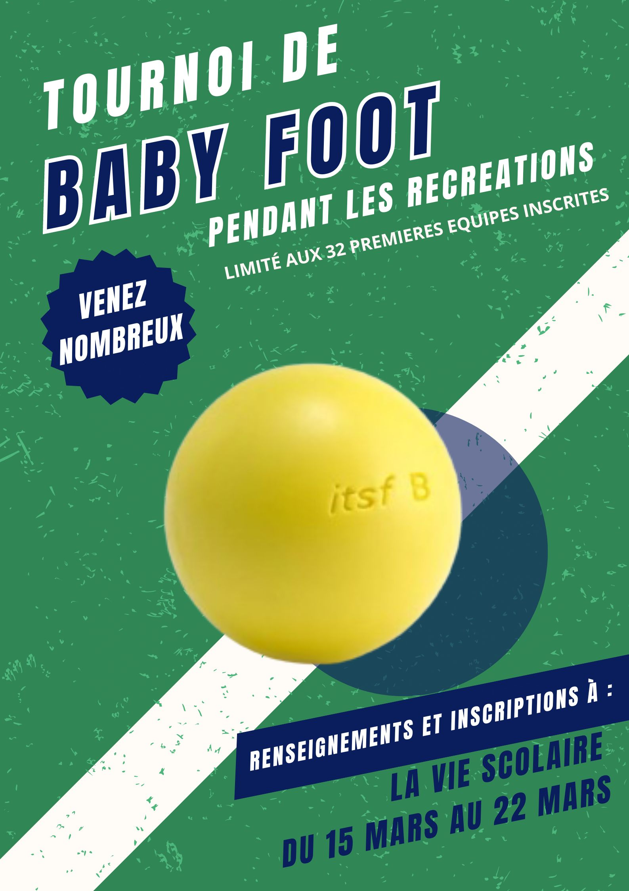
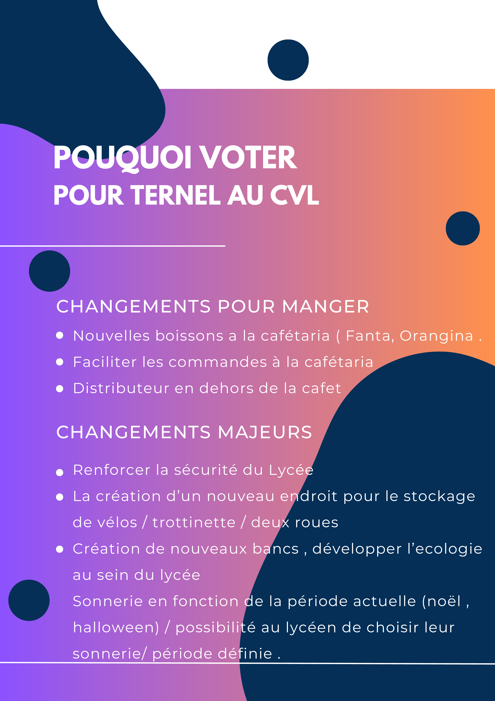

Acceuil
À propos de moi
Projets personnels
Photos
Projets en classe
Infographie
Vidéos YouTube
Infographie

Création d'affiche pour un tournoi de Baby-Foot au Lycée Guy Mollet en tant que membre du CVL du lycée.
Création d'affiche pour la campagne pour l'élection du CVL du lycée.

Création d'un flyer (agrandi pour l'occasion) pour la campagne pour l'élection du CVL du lycée.